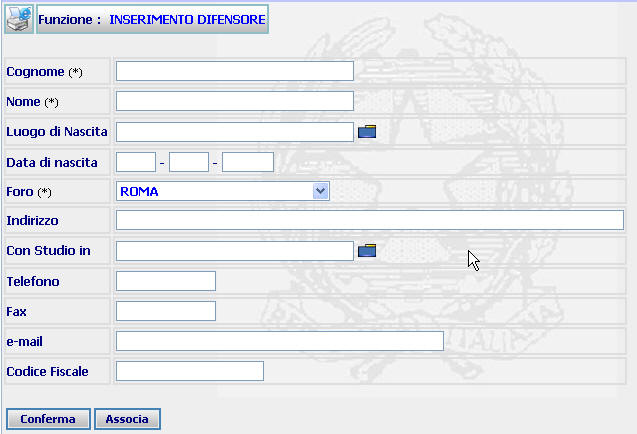
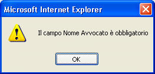
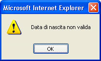

GENERALITA'
INSERIMENTO DIFENSORE: La funzione, consente sia di inserire e registrare i dati anagrafici di un nuovo difensore, sia di associare un nuovo difensore al procedimento corrente (individuabile attraverso l'utilizzo del bottone "Dati Correnti" presente nell'area di navigazione). L'inserimento di un nuovo difensore consiste nel definire i suoi dati identificativi.
ATTENZIONE: Prima di iscrivere un soggetto è utile verificare se tale soggetto sia già presente nel sistema tramite la funzione di ricerca difensore.
LE MASCHERE VIDEO
La funzione in esame viene realizzata attraverso l'utilizzo della seguente maschera che riporta gli elementi descrittivi e operativi dei dati anagrafici del difensore.

Ci sono due tipologie di campi: obbligatori e opzionali; i campi obbligatori sono contrassegnati con un asterisco.
COME FARE PER ...
| Per inserire un nuovo difensore l'utente deve: |
Posizionarsi sulla scheda Inserimento.
Introdurre i dati obbligatori ed eventualmente i dati opzionali.
Confermare i dati inseriti nella maschera agendo sul bottone
. A fronte di questa operazione il nuovo difensore viene inserito nel sistema e viene visualizzata la scheda del Dettaglio difensore.
| Per associare un nuovo difensore al procedimento corrente, l'utente deve: |
Posizionarsi sulla scheda Inserimento.
Introdurre i dati obbligatori ed eventualmente i dati opzionali.
Confermare i dati inseriti nella maschera agendo sul bottone . A fronte di questa operazione il difensore viene inserito nel sistema e viene visualizzata la scheda di Inserimento Difensore in un Fascicolo.
CAMPI
I dati che consentono di definire un nuovo difensore sono i seguenti:
| NOME | DESCRIZIONE |
| Cognome * | Compilare il campo con testo libero |
| Nome * | Compilare il campo con testo libero |
| Luogo di Nascita |
Digitare il campo
con testo libero
o selezionando il luogo attraverso l'apposito
Pulsante di
Ricerca da Lista Predefinita |
| Data di Nascita | Compilare il campo data nel formato gg/mm/aaaa. |
| Foro* | Selezionare tramite la tendina la voce desiderata. |
| Indirizzo | Compilare il campo con testo libero. N.B. l’esistenza del comune non è accertata |
| Con Studio in |
Digitare il campo
con testo libero
o selezionando il luogo attraverso l'apposito
Pulsante di
Ricerca da Lista Predefinita |
| Telefono | Compilare il campo con testo libero. |
| Fax | Compilare il campo con testo libero. |
| E_Mail | Compilare il campo con testo libero. |
| Codice Fiscale | Compilare il campo con testo libero. |
Da notare che per il campo Codice Fiscale:
1. Non esiste controllo di compatibilità tra dati del soggetto e codice fiscale digitato.
2. Può essere duplicato per soggetti diversi (senza alcun messaggio di avvertimento per l’utente).
PULSANTI
Oltre ai pulsanti orizzontali dell'area di navigazione, sono presenti i seguenti pulsanti:
|
PULSANTE |
DESCRIZIONE |
|
|
Questo pulsante ha lo
scopo di stampare il contesto (videata) |
|
|
Questo pulsante di ricerca da lista predefinita ha lo scopo di selezionare, da una lista predefinita, il contenuto da inserire nel campo corrispondete. |
BOTTONI
Oltre ai comandi funzionali relativi al menù verticale sono presenti i seguenti comandi:
|
COMANDI |
DESCRIZIONE |
|
|
A fronte di tale comando, il sistema dopo aver verificato la validità dei dati specificati, termina la funzione con l'inserimento del difensore e la visualizzazione del Dettaglio avvocato. |
|
|
A fronte di tale comando, il sistema dopo aver verificato la validità dei dati specificati, termina la funzione con l'inserimento nel sistema del difensore e visualizzado la maschera di Inserimento Difensore in un Fascicolo |
CONTROLLI
A fronte
della pressione del bottone
 e
, il sistema
verifica la correttezza dei dati e visualizza un messaggio di errore nel caso che:
e
, il sistema
verifica la correttezza dei dati e visualizza un messaggio di errore nel caso che:
L'avvocato risulta già inserito; in questo caso il sistema visualizzerà il seguente messaggio:
Se l'utente cliccherà su
allora verrà visualizzata la maschera del Dettaglio avvocato.
Se l'utente cliccherà su allora il sistema tornerà a visualizzare la maschera di Inserimento Difensore.
I dati obbligatori, contrassegnati con l’asterisco non risultino inseriti. In questo caso il sistema visualizzerà il seguente tipo di messaggio:

Il formato della data di nascita non sia corretta. In questo caso il sistema visualizzerà il seguente tipo di messaggio:

Se il sistema invece non riscontrerà errori verrà visualizzata la maschera :
Dettaglio avvocato nel caso che l'utente avesse cliccato su
Inserimento Difensore in un Fascicolo nel caso che l'utente avesse cliccato su .